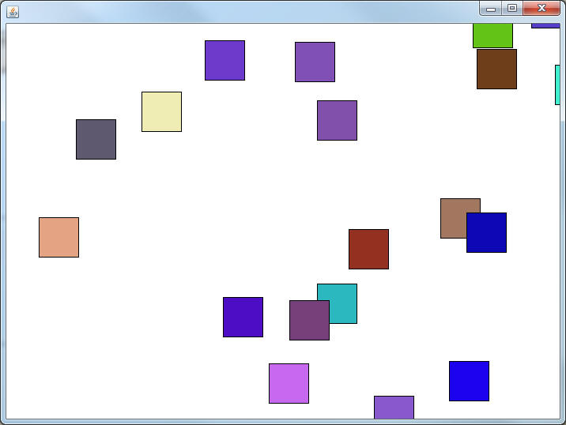

Asteroids: The AsteroidSprite Class
In the inheritance chapter you built an abstract class named Sprite, which was meant to help represent a moving object in a bounded window. Copy that class into your Asteroids project.
Here's a quick refresher of what should be contained in it. You should not have to recreate this, it is simply a reminder of how that old class functions.
Instance Fields:
- doubles for x,y to represent the location of the
Sprite
- doubles for xVectors, and yVectors to represent the
speed of the Sprite in each axis
- A Rectangle to represent the boundary of the Sprite
Concrete Methods:
- setX, setY, getX, getY, setXVelocity, setBoundary...
methods allowing you to access each of the instance fields.
- move(): causes the x and y to change based on their
x and y vectors
- update(): This is the main driving method that
will be assosciated with the timer. I pretty much calls the move method
and then the processBoundary method.
Abstract Methods: The
following methods must be overridden at some point in the inheritance hierarchy
before an object can be constructed.
- paintSelf: This method will be called when it
is time to paint. This is the method that actually represents the object
with the PaintBrush.
- processBoundary: This method will look at the
bounding Rectangle and determine what should happen to the Sprite.
The Sprite class does not function on its own. It needed the help of a SaccoObject to get going. SaccoObjects are useful because they are built to interact with the user.
- Representing Visually: If you override the paintWindow method, the window that appears will display whatever you tell the paintbrush to draw. If you use that PaintBrush to call the Sprite's paintSelf method, that Sprite should appear on the Window
- Timing: When dealing with Sprites, they often need to update consistently on a timer. SaccoObjects have a timer built into it. You may adjust its settings using the inherited setDelay(int) method, and start the timer using the start() method. If you override the onTimerTick() method, it will then be called every clock cycle. This is the section where you call the Sprite's update() method in order to see movement.
- User input: If we want the user to be able to interact with the program in any way, we need a way to process input. There are lots of methods that are called at specific times.
public void onMousePress(MouseEvent m) public void onMouseRelease(MouseEvent m) public void onMouseMove(MouseEvent m) public void onKeyPress(int keyCode) public void onKeyRelease(int keyCode)
These methods are called when the user uses the mouse or keyboard. If you want the Sprite to react to either of those, these methods should be used.
The AsteroidSprite Class:
Since there are a few things in common between the objects in an Asteroids game, we are going to create a super class to help us out. Create a new abstract class named AsteroidSprite and have it extend the Sprite class. This class will be abstract because we are still not going to implement the paintSelf method that it inherits.
A major difference between our old Sprites and the Asteroid Sprite is that AsteroidSprites will consider it's x and y to be the CENTERPOINT instead of the upper left corner. This will make our paint methods ugly, but our logic will be easier.
Constructor:
Looking at the original Sprite class, you may notice that there are many constructors to choose from. We will have the standard AsteroidSprite start at a specific location with a specific boundary. Add the following:
public AsteroidSprite()
{
super(350,250,50,50);
this.setBoundary(new BoundingBox(0,0,700,500));
}
This forces any AsteroidSprite to be constructed with a centerpoint of (350,250), have a width and height of 50, and be bounded by a BoundingBox with a width of 700 and a height of 500.
The processBoundary method:
Override the processBoundary method so that it determines if the Sprite has gone completely out of bounds. If it has, use the setX or setY methods to move to the opposite side. For example:
BoundingBox bound = getBoundary(); int leftX = bound.getX()-this.getWidth()/2; int rightX = bound.getX()+bound.getWidth()+this.getWidth()/2; if( this.getX() < leftX ) this.setX(rightX);
In the above code, I get the boundary's x and I subtract half the width of the sprite. This is the point a little to the left of the boundary. This is important because that is the point where the sprite has completely left the screen. The job of the sprite is to 'teleport' to the other side of the screen, so I set the x to the point just outside on the right by using a combination of the boundary's x and width. You will need four if statements to make sure that all 4 of the walls are checked in a similar way.
Adding an isActive variable:
When this game ends, we want to be able to stop the updating of the AsteroidSprite. Add a boolean as an instance field that represents whether or not the Sprite is 'active' and set it to true. Add a boolean isActive(), and a void setActive(boolean b) method that are simple accessors and mutators.
Now override the update method so that it will call super.update() only if the isActive method is true. This will allow us to stop the motion when it is time.
Creating a Concrete Sprite:

We cannot fully test this program until we have a non-abstract class. Copy the DriftingSquare class below into your project. Our goal is to have many Squares that are heading in a direction and leaving off one side of the screen and entering on the other.
import sacco.*;
public class DriftingSquare extends AsteroidSprite
{
int r,g,b;
public DriftingSquare()
{
super();
randomizeVectors();
r = (int)(Math.random()*256);
g = (int)(Math.random()*256);
b = (int)(Math.random()*256);
}
public void randomizeVectors()
{
double randXV = Math.random()*10+3;
int posNegXV = (int)(Math.random()*2);
if( posNegXV ==0)
setXVelocity(randXV);
else
setXVelocity(-randXV);
double randYV = Math.random()*10+3;
int posNegYV = (int)(Math.random()*2);
if( posNegYV ==0)
setYVelocity(randYV);
else
setYVelocity(-randYV);
}
public void paintSelf(PaintBrush brush)
{
brush.setColor(r,g,b);
brush.fillRectangle((int)getX()-getWidth()/2,(int)getY()-getHeight()/2,getWidth(),getHeight());
brush.setColor("black");
brush.drawRectangle((int)getX()-getWidth()/2,(int)getY()-getHeight()/2,getWidth(),getHeight());
}
}
Copy the AsteroidsBoard class into your project. The Board is in charge of telling a List of AsteroidSprites when to move.
import sacco.*;
import java.util.ArrayList;
public class AsteroidsBoard extends SaccoObject
{
ArrayList < AsteroidSprite > astList;
public AsteroidsBoard()
{
astList = new ArrayList < AsteroidSprite >();
loadDriftingSquares(20);
}
public void loadDriftingSquares(int num)
{
for( int i =0; i < num; i++)
{
astList.add( new DriftingSquare());
}
}
public void launch()
{
this.setSize(700,500);
this.setVisible(true);
this.start();
}
@Override
public void paintWindow(PaintBrush brush)
{
//paint everything in the astList
for( AsteroidSprite ast: astList)
{
ast.paintSelf(brush);
}
}
@Override
public void onTimerTick()
{
//update everything in the astList
for( AsteroidSprite ast: astList)
{
ast.update();
}
}
@Override
public void onKeyPress(int keyCode)
{
}
@Override
public void onKeyRelease(int keyCode)
{
}
public static void main()
{
AsteroidsBoard myBoard = new AsteroidsBoard();
myBoard.launch();
}
}
The key to having multiple objects is the ArrayList<AsteroidSprite> as the instance field. You can add any class that extends AsteroidSprite to this list (Polymorphism Alert!). Note that both the paint method and the step method loop through the ArrayList and tell every object in the List to do something. The very last important piece of the code is the loadDriftingSquares method, which adds DriftingSquares to the list so that we can test out our code.
Run the AsteroidsBoard. Check to make sure a few things are happening:
- The Squares are all starting in the center of the
screen
- The Squares all have random directions
- When the Squares go
completely
off the screen, they reenter on the opposite side.